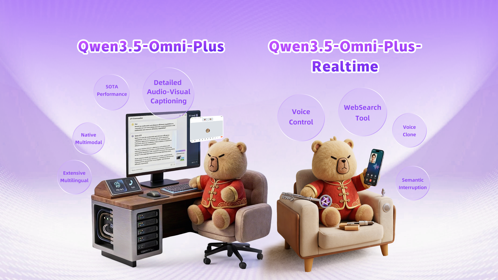
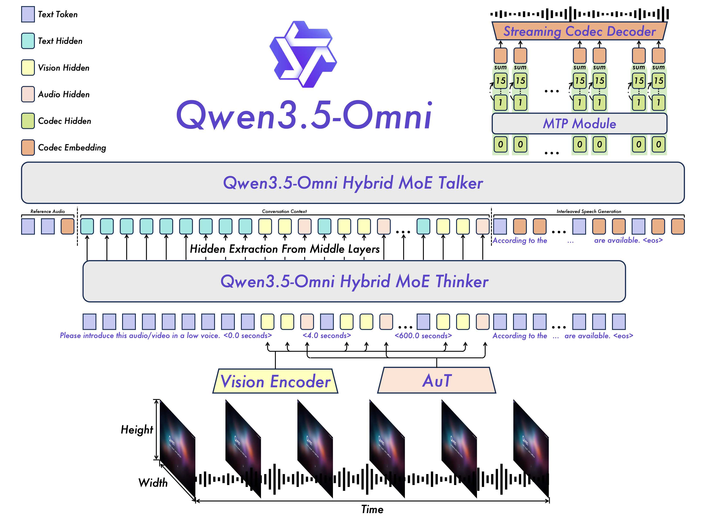
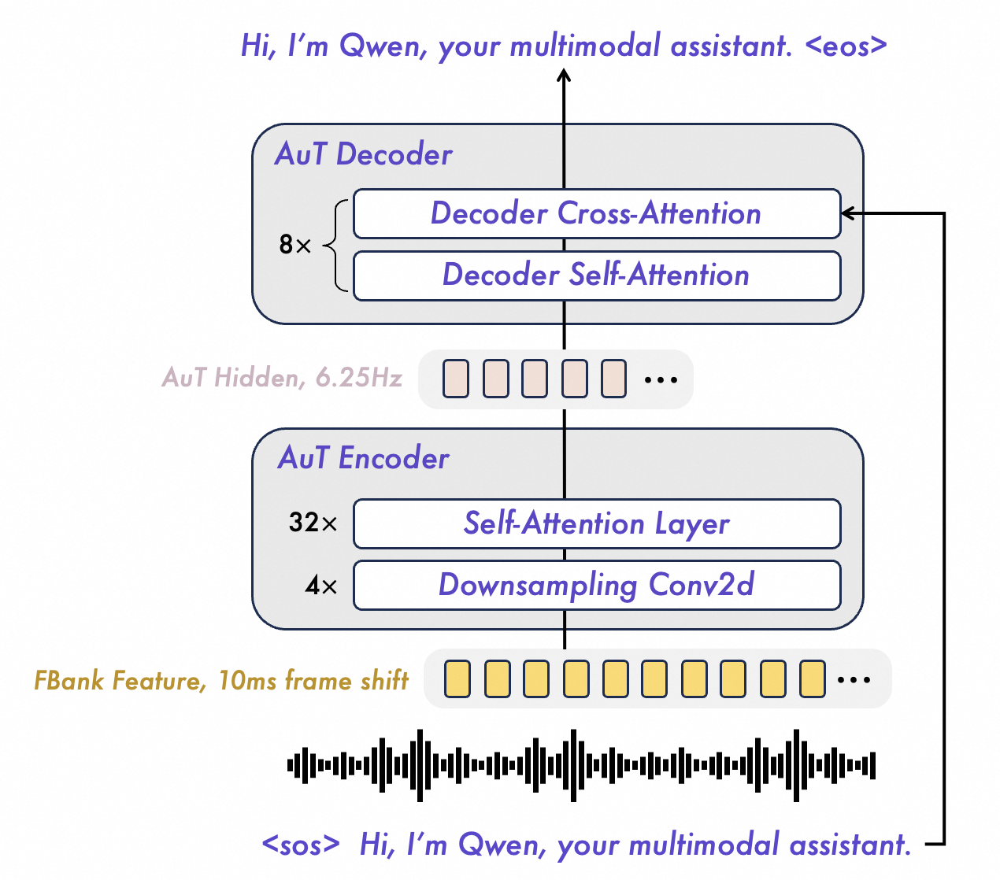

Qwen3.5-Omni 是 Qwen-Omni 家族的最新一代全模态模型：它能同时理解文本、图像、音频、视频，并实时生成文本或语音回应。它沿用 Thinker–Talker 双脑架构——Thinker 负责「想 + 说成文字」，Talker 负责「把文字变成流式语音」。三大关键升级让它既强又快：① Thinker 与 Talker 都用 Hybrid-Attention MoE，支持 256k 长上下文（10 小时音频 / 400 秒 720P 视频）；② 用 ARIA 动态对齐文本与语音单元，解决流式语音「吞字、念错」的老毛病；③ 多 codebook codec + MTP 实现逐帧即时出声。结果：在 215 个音频 / 音视频子任务上拿下 SOTA，音频能力超过 Gemini-3.1 Pro，而文本 / 视觉能力不掉队。
这篇论文要解决什么
人和世界打交道，本来就是「全模态 + 会行动」的
我们看、我们听、我们说，还会顺手查资料、调用工具去完成事情。可是大多数模型只停留在被动的「感知—回答」：给一张图答一句话，给一段音频转一段字。
论文指出，现有模型在四件「实用部署必需的能力」上明显不足：可扩展的智能体行为、实时交互、自主调用工具、以及跨模态推理。要做一个真正能陪人对话、能看视频听声音、还能边想边动手的「原生全模态智能体」，就需要把理解、推理、生成、行动统一进一个端到端模型里——这正是 Qwen3.5-Omni 想做的事。

这是论文的封面示意图，用两只小熊把模型的两类用法画了出来：一个统一模型，既能当「深度理解引擎」，也能当「实时语音助手」。
左侧 · Qwen3.5-Omni-Plus（坐在电脑前，离线强能力）
- SOTA Performance：在大量音频 / 音视频基准上达到业界最强。
- Detailed Audio-Visual Captioning：能生成「剧本级」结构化字幕——自动分镜、打时间戳、描述人物及其与声音的关系。
- Native Multimodal：原生全模态预训练，而非把多个单模态模型拼接。
- Extensive Multilingual：覆盖海量语言与方言（语音识别 113 种、语音合成 36 种）。
右侧 · Qwen3.5-Omni-Plus-Realtime（坐在沙发上拿手机，实时交互）
- Voice Control：端到端用语音直接控制音量、语速、情绪。
- WebSearch Tool：自主联网搜索、调用工具（FunctionCall）。
- Voice Clone：用用户提供的样本做零样本音色克隆。
- Semantic Interruption：靠原生「轮次意图识别」实现语义级打断（你说话它就停下来听）。
一句话：同一个模型，左手「看懂世界」，右手「实时陪你说话办事」。
站在前作的肩膀上
从 Qwen2.5-Omni 到 Qwen3.5-Omni：升级在哪
Qwen3.5-Omni 不是从零发明，而是在自家 Omni 谱系上迭代。理解它最快的方式，是看它相对前代解决了什么痛点。下面三张卡片按时间展开。
做了什么：首次把「理解 + 文本生成」（Thinker）和「语音生成」（Talker）拆成协作的两个模块，并用分块预填充（chunked prefilling）让编码器沿时间维度出 chunk，降低首字延迟。
卡在哪：规模与上下文有限，多模态长序列建模与流式稳定性仍有提升空间。
做了什么：用基于 RVQ（残差矢量量化）的 codec 表示大幅提升语音推理效率；Talker 采用「双轨」输入设计；用 TM-RoPE 给模型音视频时间感知。
卡在哪：① 双轨生成里文本与语音 tokenizer 编码速率不匹配，流式时易吞字、念错、数字含糊；② TM-RoPE 把位置 ID 直接绑绝对时间，长视频会产生过于稀疏的索引，削弱长程时序建模。
- ① Hybrid-Attention MoE：Thinker 与 Talker 都改用混合注意力 MoE，含 Gated DeltaNet（GDN），长序列推理高效、KV-cache I/O 开销小。
- ② 256k 长上下文：支持 10 小时以上音频、400 秒 720P 视频（1 FPS）。
- ③ 多 codebook codec：单帧即时合成，逐帧出声。
- ④ ARIA：流式解码时动态对齐文本与语音单元，显著提升自然度与鲁棒性。
- ⑤ 多语种大幅扩展：语音识别覆盖 113 种语言 / 方言，语音合成覆盖 36 种。
本文方法 · 重头戏
架构总览：Thinker 负责想，Talker 负责说
Qwen3.5-Omni 的骨架是 Thinker–Talker。可以把它想成一个人的两个分工：Thinker 像「大脑 + 嘴里的文字」——它接收所有模态、做推理、输出文本；Talker 像「发声器官」——它直接读取 Thinker 中间层的高层表示，把文字实时变成语音。
整条流水线最重要的就是下面这张图——它是全文的「地图」。建议先看图，再展开说明逐模块对照。

图例颜色（左上角）：紫=文本 token，青=文本隐藏态，黄=视觉隐藏态，粉=音频隐藏态，绿=codec 隐藏态，橙=codec embedding。整张图从下往上读：
- ① 最底层 · 多模态输入：视频帧（标了 Height / Width）和音频波形沿时间轴排列。视频经 Vision Encoder，音频经 AuT 编码。
- ② 带时间戳的统一序列：编码后的视觉 / 音频隐藏态与文本 token 交错成一条序列，并显式插入
<0.0 seconds>、<4.0 seconds>这样的文字时间戳，让模型天然学到「时间码」。 - ③ Thinker（Hybrid MoE）：吃下这条统一序列，自回归生成文本回应（图右「According to the … <eos>」）。
- ④ Hidden Extraction：Talker 不是只读文本，而是从 Thinker 的中间层直接抽取高层表示（图中向上的箭头），信息更丰富。
- ⑤ Talker（Hybrid MoE）：结合「参考音频 + 对话上下文 + 当前轮文本」，用 ARIA 把文本单元与语音单元交错成单流（Interleaved Speech Generation），自回归预测 codec 的基础码本（codebook 0）。
- ⑥ MTP 模块：在每一帧再补出残差码本（1–15），刻画细粒度声学细节。
- ⑦ Streaming Codec Decoder（Code2Wav）：把多码本「sum」求和，用因果 ConvNet 逐帧合成波形，实现真正的流式出声。
数据流主线：模态输入 → 编码 → Thinker 出文字 → Talker 抽表示 + ARIA 交错 → MTP 补残差 → Code2Wav 逐帧出声。这就是「边想边说、低延迟」的全貌。
把这张图「跑起来」更直观。下面是端到端流式推理的逐步演示，点「下一步」看信息怎样一站站流动。
逐模块细讲
四个关键模块：编码、感知、出声、对齐
AuT：从零训练的音频编码器
音频这一支的「耳朵」叫 AuT（Audio Transformer），是一个从零训练的注意力 encoder-decoder 模型，喂了 4000 万小时由 Qwen3-ASR 生成的音频-文本对。音频先转成 fbank 特征，再被 4 个 Conv2D 块下采样 16 倍，进入自注意力层，最终得到 6.25Hz token 率的音频表示。相比 Qwen3-Omni，它喂了更多（20+ 种）多语种数据，中 : 英 : 多语 ≈ 3.5 : 3.5 : 3，并用动态注意力窗口训练，兼顾实时预填充与离线理解。

AuT 是用 ASR（语音识别）任务监督训练出来的。训练完之后，真正被 Omni 模型复用的是它的 encoder——专门负责把音频压成高质量、低帧率的表示。自底向上：
- 波形 → FBank Feature（10ms 帧移，黄色块）：原始音频先重采样到 16kHz，转成 128 通道 mel 频谱。
- AuT Encoder：
4× Downsampling Conv2d把帧率压低 16 倍，再叠32× Self-Attention Layer提特征。 - AuT Hidden, 6.25Hz（粉色块）：编码器输出的音频表示，帧率仅 6.25Hz——序列短、算得快，每帧约对应 160ms 原始信号。
- AuT Decoder：
8×（Self-Attention + Cross-Attention），通过交叉注意力读取编码器表示，在训练时以「<sos> Hi, I'm Qwen…」做 teacher forcing，输出识别文本「Hi, I'm Qwen… <eos>」。
用 ASR 把 encoder「教会听懂话」，再把这个 encoder 接进 Omni——这就是 AuT 通用音频表示的来历。
Perception：Thinker 怎么「看时间」
Thinker 把文本、音频、图像、无声视频统一成一条表示序列。文本用 Qwen3.5 的 tokenizer（词表升到 250k，多数语言编解码效率提升 10–60%）。这里有个很实在的设计取舍：
- 放弃「绝对时间硬塞进位置 ID」：前代 TM-RoPE 直接把时间编进位置 ID，长视频会让视觉 patch 的索引过于稀疏，反而削弱长程时序建模，还要海量均匀帧率数据才能学好。
- 改用「文字时间戳」：在每个视频 / 音视频片段前，直接写一串秒数文本（如
<4.0 seconds>），让模型像读文字一样学时间码；音频序列里还随机插时间戳来跨模态对齐。每 160ms 给一个时间 ID。 - 位置编号连续不冲突：多模态拼接时，后一模态从前一模态最大位置 ID + 1 开始，避免位置打架。
Speech Generation：Talker 怎么「出声」
Talker 直接在 Qwen3.5-Omni-Audio-Tokenizer 产生的 RVQ token 上工作。它用 MTP（多 token 预测）模块建模残差码本，再配一个因果 ConvNet 重建波形——高保真、低延迟、算力开销小。多轮对话里，Talker 受 Thinker 的丰富上下文（历史文本、多模态表示、当前轮流式文本）调制，能动态调节韵律、音量、情绪。和前代相比有两点关键不同：
- 给 Talker 一个「语音 system prompt」：用一段提示指定目标音色，既能零样本克隆音色，又能可控生成；比传统的说话人 embedding 能编码更丰富的多模态线索。
- 用 ARIA 取代双轨：把原来的双通道生成统一成单通道表述（详见下一节）。
ARIA：让流式语音不再吞字念错
这是本文最有意思的创新之一。ARIA = Adaptive Rate Interleave Alignment（自适应速率交错对齐）。问题根源在于：文本 tokenizer 和语音 tokenizer 的编码速率不一样，一段话对应的文本 token 数和语音 token 数对不齐，流式拼接时就会吞字、念错、把数字读得含糊。
ARIA 不依赖 MFA 对齐、也不用固定交错率，而是施加一条自适应速率约束：对生成序列的任意前缀，累计的「语音 token : 文本 token」比例，都不得超过该条目级别的全局比例。 —— 论文 §2.4，ARIA 的核心约束
这条约束虽简单，却带来三个好处：① 跨语言灵活对齐，连编码效率较低的语言也照顾到；② 天然支持「任意文本前缀 + 连贯语音续接」；③ 把双轨同步开销去掉，token 调度更高效，更贴合流式交互的增量节奏。
工程亮点
为什么它能又快又能扛并发
实时音视频交互里，首包延迟直接决定体验，并发能力决定成本与速度。Qwen3.5-Omni 从算法和架构两头压延迟：
- 分块预填充（Chunked Prefilling）：沿用前代，音视频编码器能按时间维度出 chunk，显著降低 Thinker / Talker 的 TTFT（首字时间）。
- Hybrid MoE + Gated DeltaNet：GDN 对长音视频序列建模特别有效，大幅降低长上下文推理的 KV-cache I/O，提升吞吐与并发。
- 轻量出声链路：Talker（预测 RVQ） + MTP（补残差） + 因果流式 ConvNet codec 解码器，都很轻、对 batch 友好，适合低延迟部署。
注：上表为论文 Table 1 / Table 2 报告的首包延迟；Flash 与 Plus 规模差异大、部署资源与并行策略不同，数字不宜横向严格对比。
跨模态训练
怎么训出来的：预训练 3 段 + 后训练多段
全模态能力不是一次喂完，而是分阶段「先对齐、再泛化、最后拉长上下文」，后训练再把各领域专长蒸馏进同一个模型并对齐人类交互偏好。
预训练：三阶段（Thinker 侧）
后训练：Thinker 三阶段 + Talker 四阶段
① 专家蒸馏：先从 Qwen3.5 base 分别 SFT + RL 出一批领域专家（文本 / 代码 / 推理 / 智能体 / 视觉 / 音频），用它们造数据，再把各路专长蒸馏进一个统一模型。
② 同策略蒸馏（OPD）：同一问题，文本输入的回答通常更流畅、更会推理；把「文本条件下的回答」当作「音频条件下回答」的蒸馏目标，缩小语音对话与文本对话的质量差。
③ 交互对齐 RL：针对多轮对话里的语言乱切、人设漂移、长程指令跟随退化等问题，构造多轮交互轨迹并设计奖励，让模型在长对话中更稳定一致。
① 通用阶段：用 2000 万小时以上多语种语音 + 多模态上下文预训练；引入指令跟随式语音生成等多样任务，超越「表示→语音」的简单单调映射。
② 长上下文阶段：数据分层筛选 + 高质量子集 CPT，借 Qwen3-Omni-Captioner 抑制噪声幻觉；上下文扩到 64k。
③ 强化学习阶段：用 DPO 对齐人类偏好（多语种偏好对），并加规则奖励、用 GSPO 提升整体能力与训练稳定性。
④ 说话人微调：轻量 speaker fine-tuning，让模型忠实复现目标音色，同时进一步提升自然度、表现力与可控性。
有意思的点
意外涌现：Audio-Visual Vibe Coding
论文报告了一个全模态模型里新涌现的能力：模型能直接根据音视频指令写出可执行代码，作者称之为 Audio-Visual Vibe Coding。这意味着模型可以在没有外部编排的情况下，对实时音视频查询做出「会动手」的响应——把「看 + 听 + 写代码」串成一条龙。
它带来的三类新能力（相对 Qwen3-Omni）
- 可控音视频字幕：可控、细粒度、结构化字幕，乃至剧本级描述——自动分段、时间戳标注、人物及其与声音关系的刻画。
- 全面实时交互：原生轮次意图识别带来的语义打断；端到端语音控制音量 / 语速 / 情绪；用户样本即时音色克隆。
- 原生全模态智能体：自主 WebSearch、复杂 FunctionCall，以及上面的 Audio-Visual Vibe Coding。
实验结论 · 轻量
结果一句话：音频超 Gemini-3.1 Pro，文本视觉不掉队
在覆盖音视频、音频、ASR、语种翻译 / 识别等 215 个子任务上，Qwen3.5-Omni-Plus 拿下 SOTA，在通用音频理解、推理、识别、翻译、对话上超过 Gemini-3.1 Pro，整体音视频理解达到其水平；同时文本 / 视觉能力相对同规模纯 Qwen 模型不退化。
挑几个最能说明问题的音频基准，和 Gemini-3.1 Pro 直接对比（粗体为更优）：
| 基准（↑ 越高越好） | Gemini-3.1 Pro | Omni-Flash | Omni-Plus |
|---|---|---|---|
| 音频理解 | |||
| MMAU | 81.1 | 80.4 | 82.2 |
| MMSU | 81.3 | 72.2 | 82.8 |
| RUL-MuchoMusic | 59.6 | 60.5 | 72.4 |
| 语音对话 | |||
| VoiceBench | 88.9 | 87.8 | 93.1 |
| 音视频理解 | |||
| DailyOmni | 82.7 | 81.8 | 84.6 |
| Qualcomm IVD（音频查询） | 66.2 | 66.3 | 68.5 |
数字取自论文 Table 5 / Table 7。并非所有基准都领先（如 WorldSense、AV-SpeakerBench、OmniGAIA 上 Gemini-3.1 Pro 更强），此处只挑最能体现优势的核心结论，完整数据见原文。
结语
一个能「感知、推理、生成、行动」的统一系统
Qwen3.5-Omni 把跨文本、图像、音频、音视频的理解、推理、生成与行动统一进一个模型：基于 Thinker–Talker，引入高效 Hybrid-Attention MoE、256k 长上下文、多 codebook codec + ARIA 的流式语音、以及大幅扩展的多语种支持。论文给出的启示是——把原生全模态训练规模化，能造出不只「会感知会推理」、还能「实时交互、会动手」的统一系统。
We hope Qwen3.5-Omni provides a strong foundation for future research on general-purpose omnimodal agents. 我们希望 Qwen3.5-Omni 能为「通用全模态智能体」的后续研究提供坚实基础。—— 论文结论